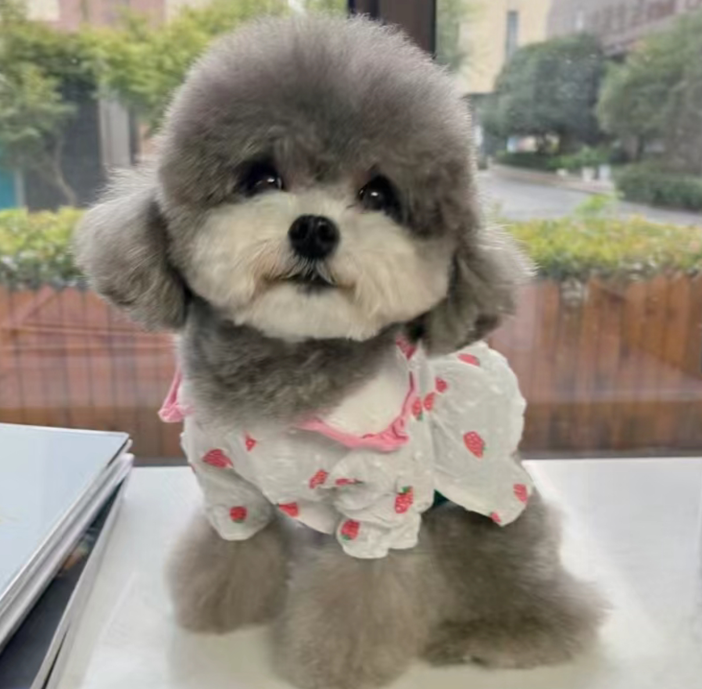
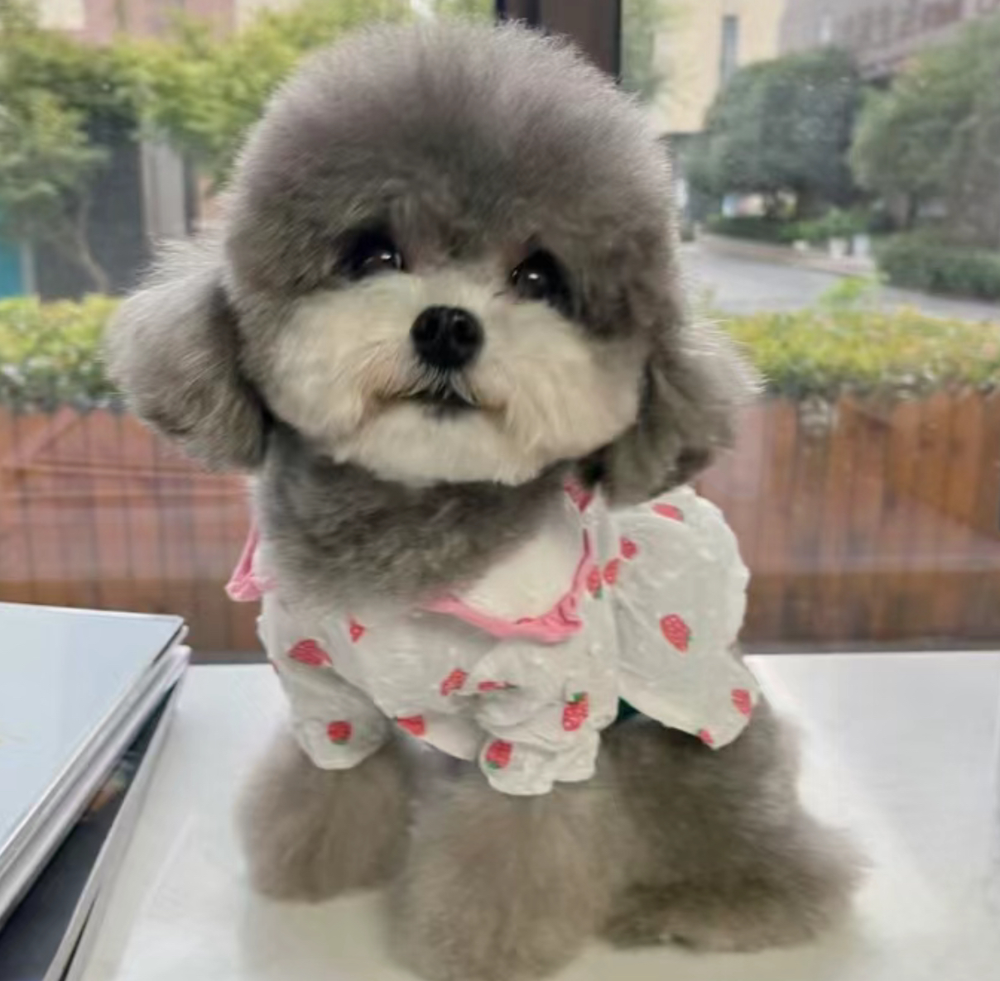

Hello!
I’m Celine, a sophomore student at NYU’s IDM program. I love exploring new tech tools and combining them with my passion for art and design. My favorite color is pink, which you might have noticed from this website’s style!
Outside of coding, I absolutely love dancing—I’ve been doing it since high school, and it’s how I recharge my creativity. From hip-hop to contemporary, I like trying different styles. I believe that music and movement spark new ideas, which helps me come up with wild experiments in creative coding.
I’m from Shanghai, a city full of life, history, and amazing street food. I love wandering through busy neighborhoods, discovering hidden gems, and enjoying the local culture. I have three adorable dogs that fill my home with energy and happiness. Some of my favorite activities include exploring art galleries and meeting friends in cute coffee shops whenever I have some free time.
If you’d like to know more about me, feel free to explore my other pages. I call this site the “Celine-code Universe” because it shows my love for bold colors, playful creativity, and a sense of fun. I hope you enjoy browsing my world and seeing what inspires me!


 
